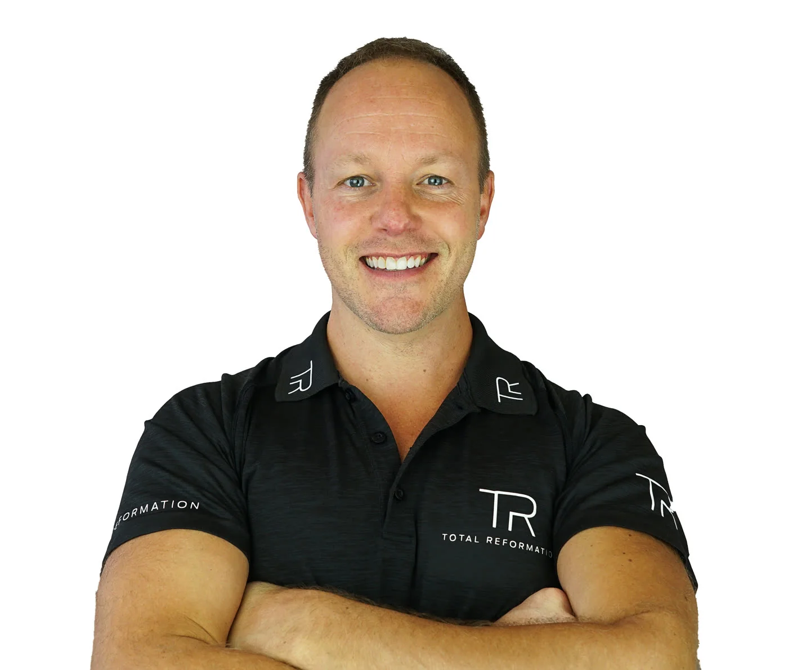
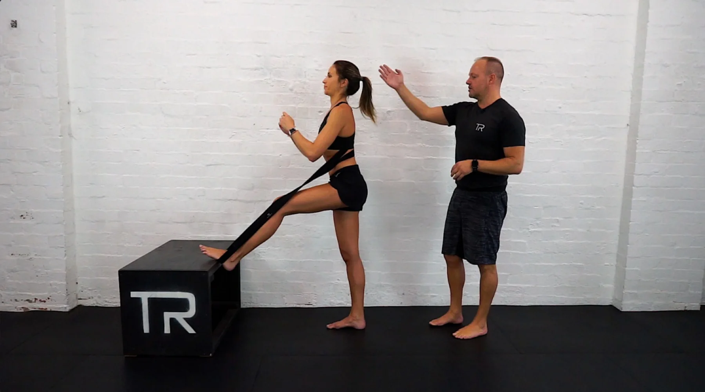
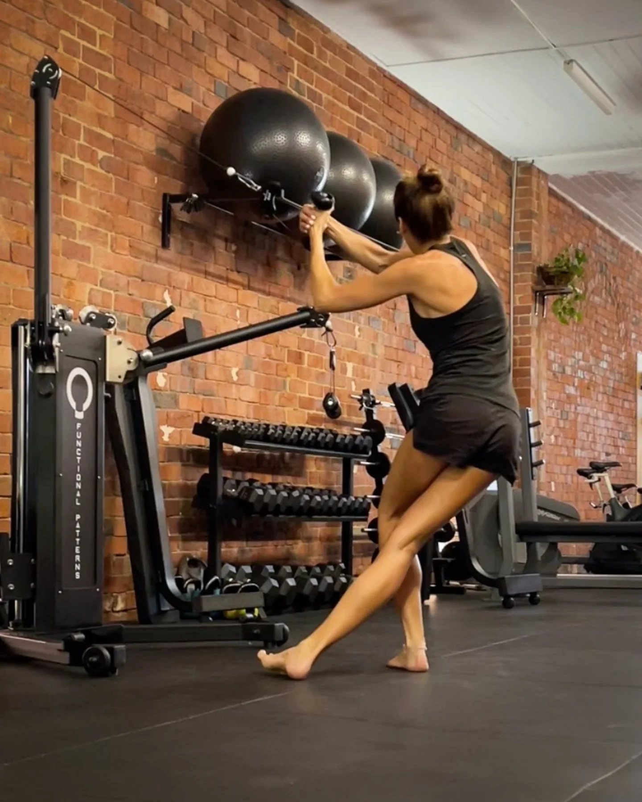
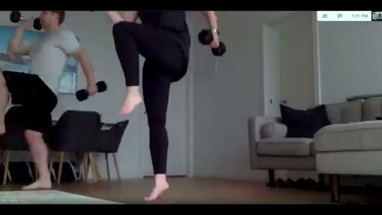
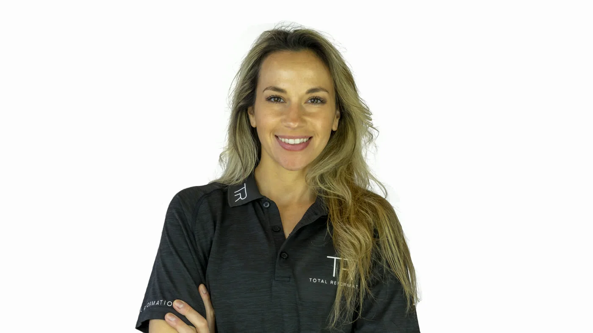
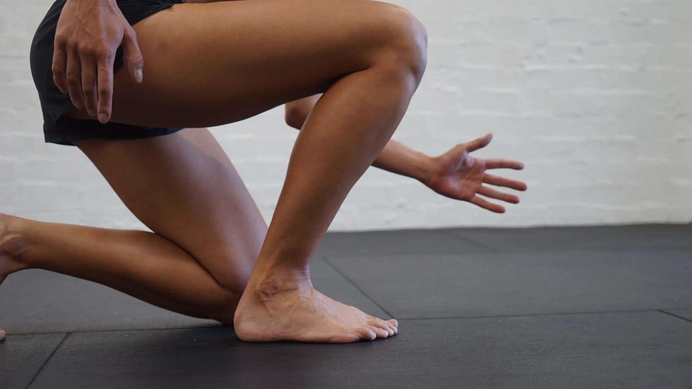
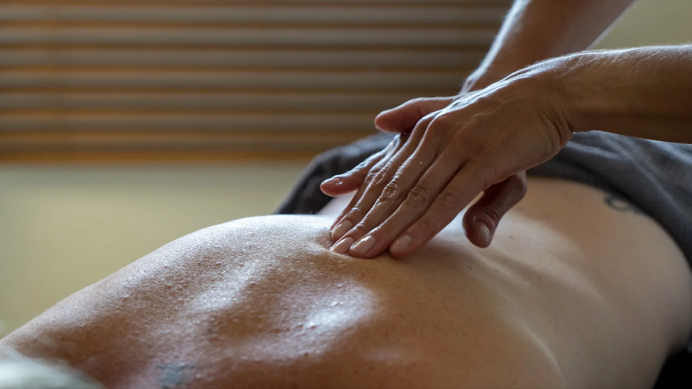

Darren
Movement & trainingA considered approach to movement, with attention to the details that are easy to miss on your own.
Not just for the hour you train.
For the stairs, the weekends, the long walks. For whatever life asks of you.

Real people. Individual attention.
Movement coaching with Darren & Emma.

Your body is not a template.
Your training shouldn’t be either.

Individual coaching that starts with how you move and what you want to do. Build the foundations before adding the challenge.
Remedial massage and hands-on attention. A chance to discuss what you’re feeling, not push through it.
A clear plan, familiar videos and a simple way to tell your trainer how things are going. Explore the companion concept.
Not sure which service fits? Start with a conversation, not a self-diagnosis.
Your next session. Your trainer’s notes. The little wins that matter to you. One place to keep moving forward.
Meet your companion ↗Your goal: make the weekend walk feel easier.

Darren and Emma bring training and remedial massage together. The starting point is you.
A considered approach to movement, with attention to the details that are easy to miss on your own.

A personal, hands-on space to talk through what your body needs and make time for recovery.
A taste of Darren’s own public tutorials.
Not a personalised prescription.

Movement / video excerpt
Recovery / video excerpt